Black Belt · three small roster changes (already decided in the rulebook)
Nothing is built yet. “Today” is the real screen in the preview; “After” is the same screen edited by hand to show the decided result. Amber outlines mark what changes; a dashed outline marked “gone” is where something no longer shows.
Today a past-due “Not paid” tag is red, the color kept for “gone for good”. After: the same amber as the “Late · $X since …” tag beside it. Shown with the pretend date Apr 26, 2027 (Rina Patel, due Mar 27; Sam Lee is Late).
PC (1280) · roster rows
Today
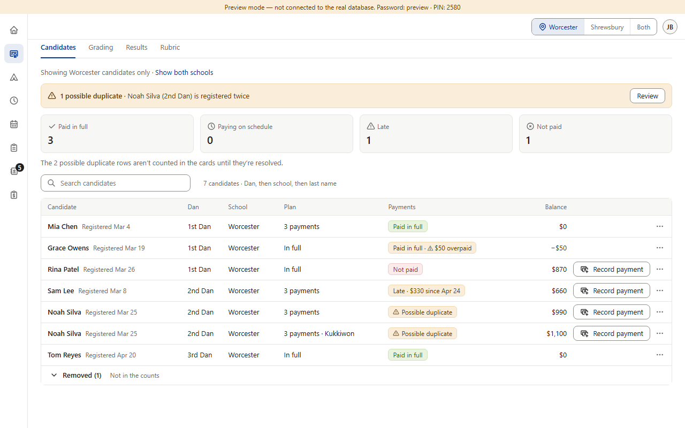
Late: the look to match
After
Late: the look to match
Phone (390) · roster rows, and PC candidate detail (the tag under the name)
Today
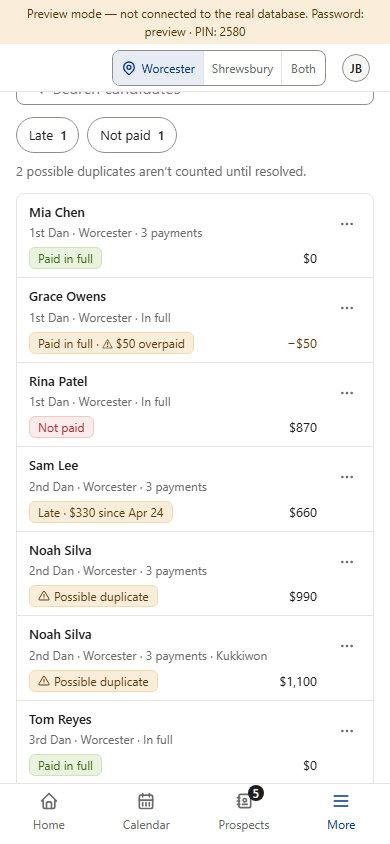
Late
After
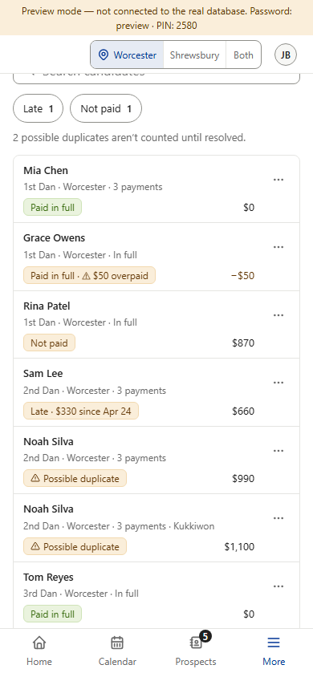
Late
Today
After
2 “Find a candidate”, and Clear search on the no-match line R3-09 · rulebook v1.050
The box reads “Find a candidate” (placeholder and screen-reader name). With “zz” typed, the no-match line ends with a Clear search link, drawn like the shared “Showing … only · Show all” line (here in the empty list’s place, as Camps does). The box’s own ✕ stays and becomes the shared icon button, which has a tooltip on PC.
PC (1280) · “zz” typed (the tooltip shows while the pointer is on the ✕)
Today
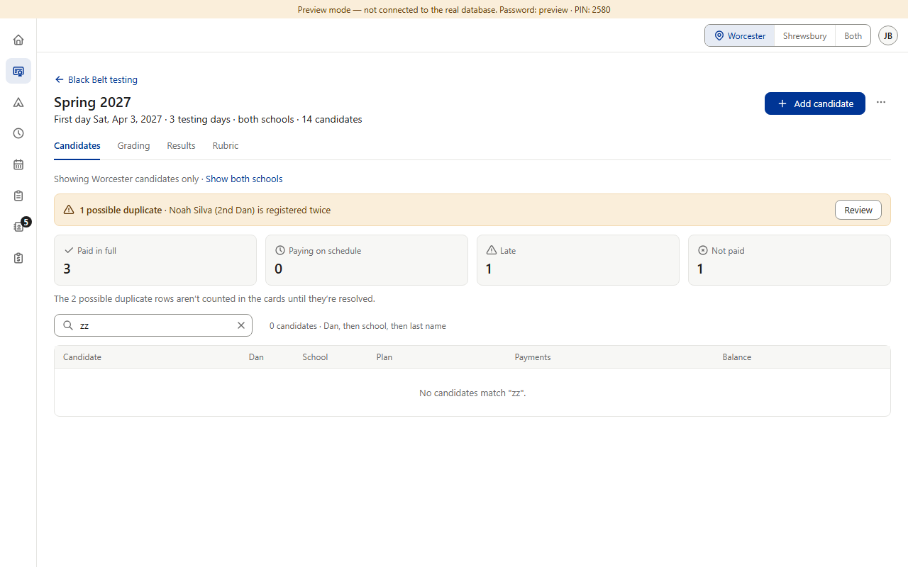
After
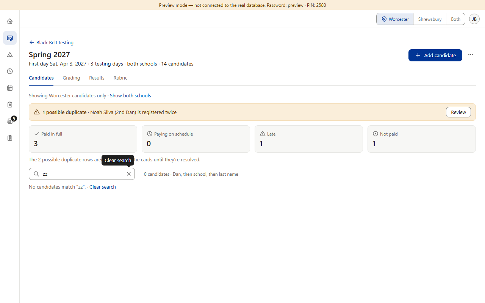
Phone (390, touch) and 320 wide (the line stays inside the screen; no tooltip on touch)
Today
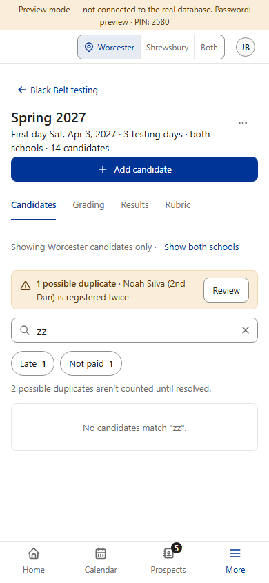
After
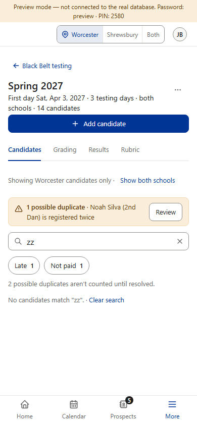
After · 320
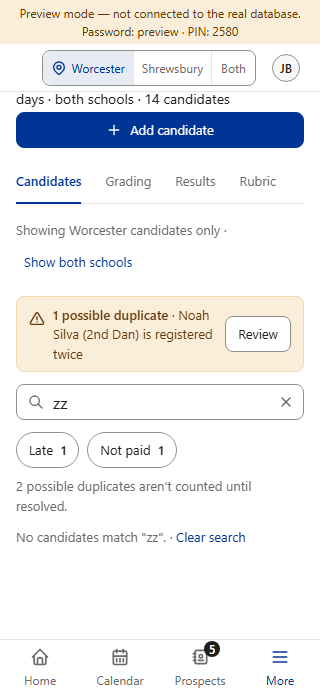
Box still empty · the new words
Today · PC
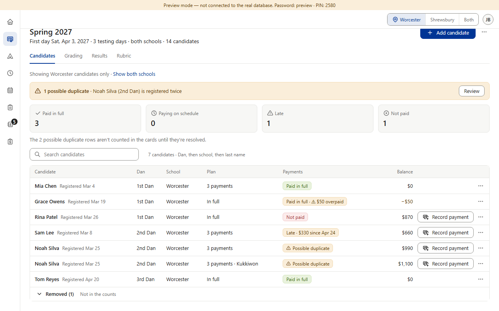
After · PC
Today · phone
After · phone
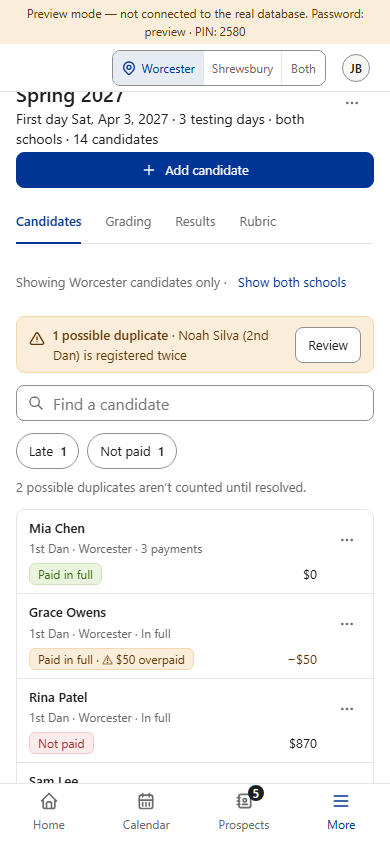
3 A “Possible duplicate” row offers no Record payment R3-02 · rulebook v1.046 (8)
Today both Noah Silva rows (the pair marked “Possible duplicate”) still offer Record payment in three places, so a payment could land on the copy that is later withdrawn. After: none of the three offers it until the pair is resolved. Everything else on the row stays.
PC (1280) · the row button, on both Noah Silva rows
Today
After
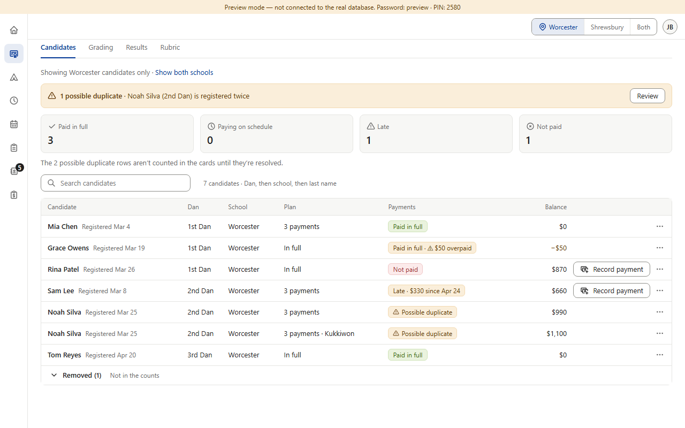
gone
gone
PC · the candidate detail’s footer (Noah Silva)
Today
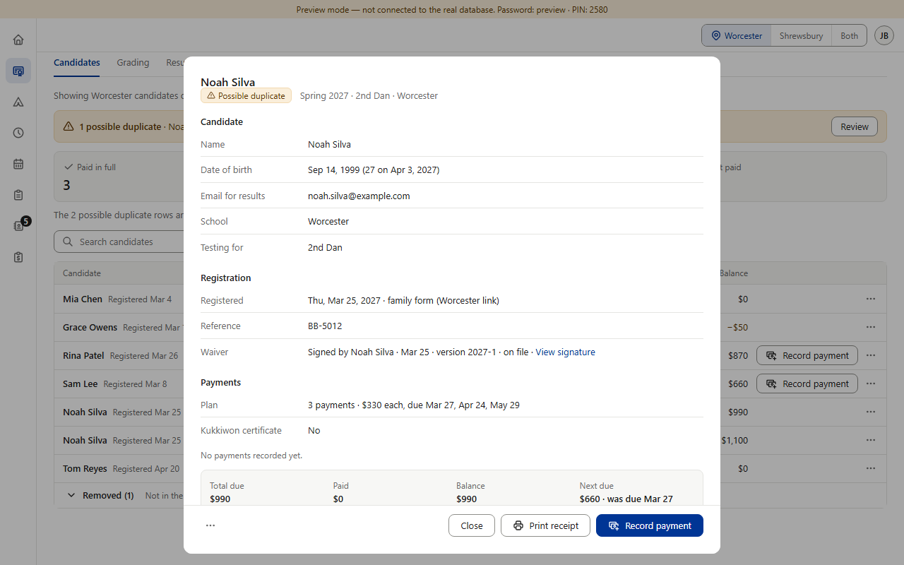
After
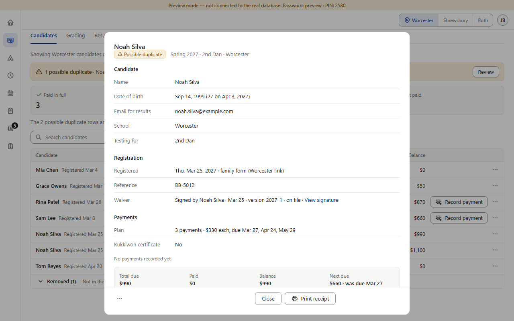
gone
Tablet (820, touch) and phone (390, touch) · the row ⋯ menu: the item goes, the rest stays
Today · 820
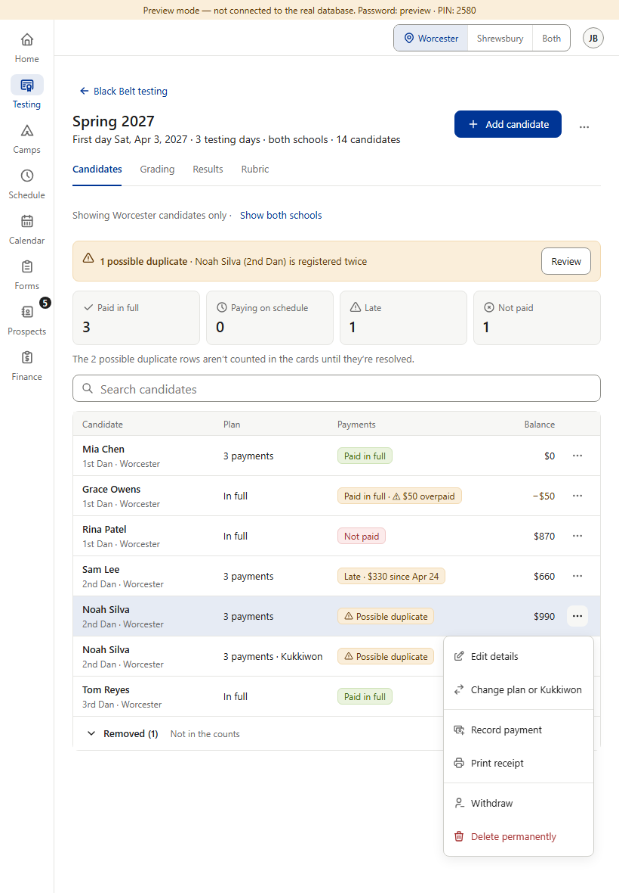
After · 820
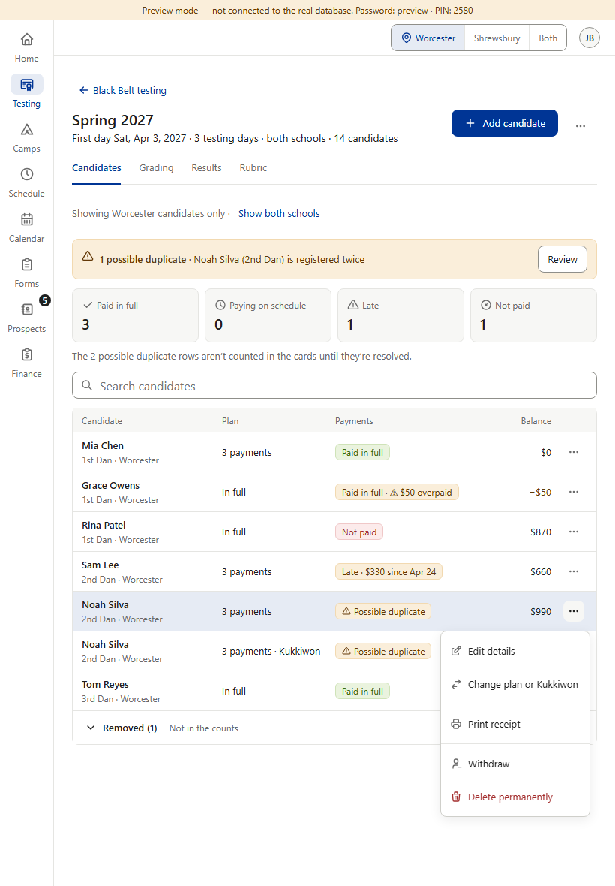
Today · 390
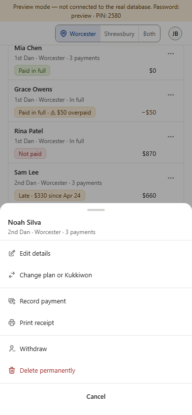
After · 390
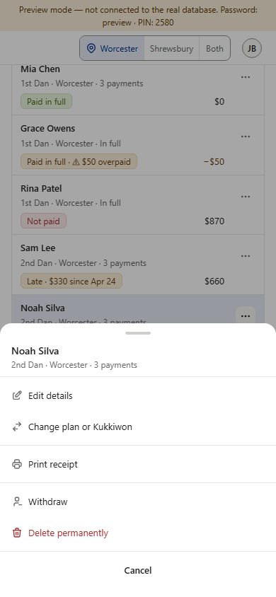
After Review → Keep this one, the kept row is no longer a possible duplicate and offers Record payment again.
1 · R3-01, v1.044 (Jeffrey: “A: amber”): only the color of the past-due tag changes. The words, the timing (v0.224), the Not paid card and the filter stay.
2 · R3-09, v1.050 (Jeffrey: “A: Find a …”): the no-match words stay (“No candidates match …”), the box stays on the left above the list, and the ✕ still empties the box.
3 · R3-02, v1.046 (8) (Jeffrey: “Approve all”): the duplicate box, its Review button, the “Possible duplicate” tags, the gray line under the cards and every other menu item stay as they are.